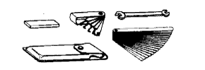

OIL PUMP > REMOVAL > Preparation

 | 09213-70011 | Crankshaft Pulley Holding Tool |
 | 09228-06501 | Oil Filter Wrench |
 | 09330-00021 | Companion Flange Holding Tool |
 | 09950-50013 | Puller C Set |
 | (09951-05010) | Hanger 150 |
 | (09952-05010) | Slide Arm |
 | (09953-05010) | Center Bolt 100 |
 | (09954-05011) | Claw No.1 |
 | 09960-10010 | Variable Pin Wrench Set |
 | (09962-01000) | Variable Pin Wrench Arm Assembly |
 | (09963-01000) | Pin 10 |
| Oil pressure gauge | - |
| Steel square | - |
| Torque wrench | - |
| Vernier caliper | - |
| Item | Capacity | Classification | |
| Drain and refill | without Oil filter change | 7.4 liters (7.8 US qts, 6.5 Imp. qts) | API grade SL "energy-conserving", SM "energy-conserving" or ILSAC multigrade engine oil: 0W-20 5W-20 5W-30 10W-30 API grade SL or SM multigrade engine oil: 15W-40 20W-50 |
| with Oil filter change | 7.8 liters (8.2 US qts, 6.9 Imp. qts) | ||
| Dry fill | 9.4 liters (9.9 US qts, 8.3 Imp. qts) | ||
 | 09040-00011 | Hexagon Wrench Set | - |
 | 09082-00040 | TOYOTA Electrical Tester | - |
 | (09083-00150) | Test Lead Set | - |
|  | 09200-00010 | Engine Adjust Kit | - |
| (09203-00010) | Thickness Gauge | - |
| Toyota Genuine Seal Packing Black, Three Bond 1207B or equivalent | - |
| Toyota Genuine Adhesive 1344, Three Bond 1344 or equivalent | - |